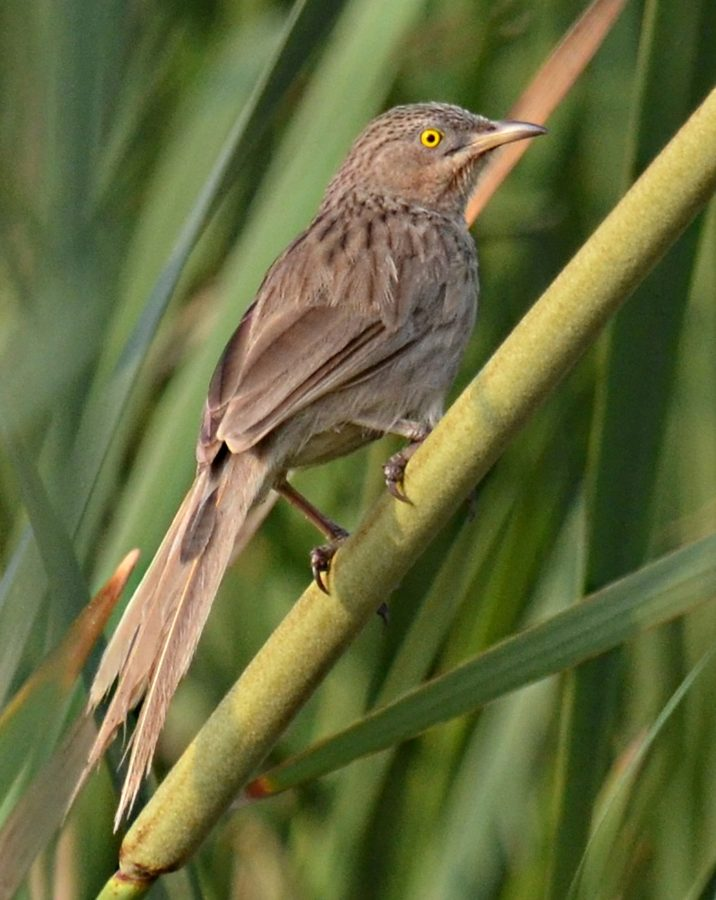

स्ट्रिएटेड बैबलरStriated Babbler
Argya earlei · Leiothrichidae · BRD-0166

- Scientific nameवैज्ञानिक नाम
- Argya earlei (Ticehurst, 1923)
- Familyकुल
- Leiothrichidae
- Hindiहिंदी
- स्ट्रिएटेड बैबलर
- Local namesस्थानीय नाम
- striated babbler, babbler, satbhai, striated satbhai
- Status hereयहाँ की स्थिति
- native
- Movementआवागमन
- Resident, here all year
- IUCNIUCN
- LC
- Reviewसमीक्षा
- audited and independently read
When to look कब देखें
Present all year.साल भर मौजूद।
Uses and possibilities उपयोग और संभावनाएँ
Drawn from the documented uses in the profile below, where each is labelled traditional, current or a research lead. All uses →
Tell it apart from इनसे अलग पहचानें
स्ट्रिएटेड बैबलर / Striated Babbler
Argya earlei (Ticehurst, 1923) — Leiothrichidae
स्ट्रिएटेड बैबलर — बस्ती की घास, झाड़ियों और खेतों के किनारे साल भर रहने वाली एक छोटी-सी भूरी चिड़िया। इसका पूरा शरीर भूरे और क्रीम रंग की धारियों (striae) से ढका होता है, जिससे इसे "striated" नाम मिला। यह चिड़िया समूह में रहती है, अक्सर 5-10 पक्षियों के झुंड में, और एक-दूसरे से लगातार संवाद करती है। इसकी आवाज़ तेज़ और चहचहाती है, खासकर जब समूह एक-दूसरे को संदेश देता है। यह जमीन पर घूमती है, कीटों और बीजों की तलाश में। इसका व्यवहार बहुत सामाजिक है और ये पक्षी एक-दूसरे को प्रभावित करते हैं।
Quick Identification त्वरित पहचान
| Feature | Description |
|---|---|
| Size | Small babbler; 20–22 cm long |
| Plumage | Brown with cream and buff streaking throughout body |
| Head | Streaked brown-buff; crest usually raised |
| Underparts | Buff-cream with brown streaking |
| Tail | Brown, rounded, often held cocked |
| Eyes | Dark brown with pale eye-ring |
| Behaviour | Gregarious; moves in flocks; stays close to ground; very vocal |
| Habitat | Scrub, grassland, field edges; avoids dense forest |
Field tip: A small, streaky brown babbler seen in noisy flocks moving through scrubland and grass, often with characteristic raised crest. Listen for their constant chattering and "chak-chak-chak" calls.
हिंदी — कैसे पहचानें:
छोटी भूरी चिड़िया, धारियों वाली।
झुंड में रहती है, शोरगुल मचाती है।
घास और झाड़ियों में दिखती है।
उठी हुई कलगी (crest) होती है।
Morphology आकारिकी
Biometrics:
| Measurement | Range |
|---|---|
| Total length | 200–220 mm |
| Wing | 90–105 mm |
| Tail | 85–100 mm |
| Bill | 15–17 mm |
Plumage: Overall brown, heavily streaked with buff and cream. Crown brown with lighter streaking and often raised as a slight crest. Nape and back brown with buff streaking. Rump and upper tail coverts paler buff. Tail brown, rounded in shape. Throat buff to cream, streaked with brown. Breast and belly buff-cream, heavily streaked with brown. Undertail coverts pale buff.
Bill: Relatively short and stout, slightly curved. Dull brown to horn-coloured. Adapted for gleaning insects and picking seeds.
Feet: Pinkish-brown or yellowish-brown; strong and adapted for ground foraging.
Eyes: Dark brown with pale orbital ring.
Sexes: Males and females similar in appearance; both sexes participate in group activities.
Vocalisations. Call repertoire:
- Contact call: A harsh "chak-chak-chak" or "chatter-chatter", given constantly within flocks.
- Alarm call: Louder, more insistent chattering when predator is detected.
- Song: A mixture of warbling and chattering during breeding season.
हिंदी: लगातार "चाक-चाक" आवाज़। झुंड में समूहचेष्टा (mobbing) की आवाज़।
Behaviour & Ecology व्यवहार और पारिस्थितिकी
Gregarious forager: Striated Babblers are highly social birds, living in family groups or flocks. They forage on or near the ground, moving through grass and low shrubs in loose formation, constantly calling to maintain group cohesion.
Ground feeder: They glean insects from grass, low shrubs, and leaf litter. They also pick seeds from grasses and weeds. They rarely venture far above ground level.
Cooperative behaviour: Groups work together to mob predators and defend territory. This cooperative vigilance provides safety from aerial predators.
Habitat preference: Prefer open or semi-open habitats including grasslands, scrubland, secondary growth, and field margins. Avoid dense forest.
Activity: Primarily diurnal. Most active during cooler hours of day; less active during midday heat.
Life Cycle / Phenology जीवन चक्र
| Stage / season | Event |
|---|---|
| January–April | Breeding season; pair formation within groups |
| March–June | Nest building and egg-laying; clutch 2–4 eggs |
| May–July | Incubation and chick-rearing; communal feeding may occur |
| July–August | Fledging; young remain with group for extended period |
| August–December | Non-breeding; larger flocks form; prepare for next breeding |
| Year-round | Resident; no seasonal migration |
Host Plants or Prey आहार
| Food Type | Examples | Foraging Method |
|---|---|---|
| Insects | Grasshoppers, beetles, ant larvae, termites | Gleaning from grass and litter |
| Seeds | Grass seeds, weed seeds | Picking from plants and ground |
| Berries | Small fruits of weeds and shrubs | Occasional gleaning |
हिंदी: कीटों और बीजों पर जीविकोपार्जन। जमीन के पास रहता है।
Predators / Natural Enemies शत्रु
- Avian predators: Shikra, Eurasian Kestrel, occasionally larger raptors
- Mammalian predators: Jackals, wild boar, domestic cats raiding nests
- Nest predators: Crows, snakes
हिंदी: बाज़ों का शिकार। घोंसलों पर सांपों और कौवों का हमला।
Agricultural / Human Relevance कृषि प्रासंगिकता
Pest control value: Striated Babblers provide significant pest control by consuming grasshoppers, beetles, and other agricultural pests. They also gleaned seeds of problematic weeds.
Protected status: Protected under the Wildlife (Protection) Act, 1972 (Schedule IV). Capturing or killing is prohibited.
Crop interactions: In some areas, their consumption of grain seeds may cause minor crop damage, but the pest control benefit usually outweighs any losses.
Cultural significance: In some communities, babblers are valued for their vocalizations and sociable behaviour.
Expected Locally स्थानीय रूप से अपेक्षित
Not a field record. Written from published accounts for eastern Uttar Pradesh. No confirmed local sighting yet — if you have seen it, that is what the atlas needs.
अभी तक स्थानीय पुष्टि नहीं। यह विवरण प्रकाशित स्रोतों से है, किसी अवलोकन से नहीं।
This species is NOT a field record. The distribution below is based on published sources describing where Striated Babblers should be looked for in eastern Uttar Pradesh.
यह स्थानीय अवलोकन नहीं है। प्रकाशित स्रोतों पर आधारित।
Striated Babblers are expected as year-round residents throughout Basti and Ayodhya districts, particularly in areas with grasslands, scrubland, and cultivated fields with hedgerows. They are very vocal and conspicuous, making them easy to locate by listening for their constant "chak-chak-chak" calls. Look for them in small flocks moving through long grass or secondary growth. A first record should note location, time, flock size, and characteristic calling behaviour. Submit through the atlas About page.
Distribution वितरण
Global range: Indian subcontinent; found from Pakistan to Bangladesh and Myanmar.
In India: Distributed throughout the plains and lower foothills; common in suitable habitats.
In Uttar Pradesh: Widespread resident in grasslands, scrubland, and cultivated areas.
In Basti district / eastern UP: Year-round resident; common in grasslands and scrub areas; abundant in cultivated fields with margins.
Research Questions शोध प्रश्न
- What is the actual flock size and composition in different seasons in Basti?
- How does the diet of Striated Babblers vary with season and habitat type?
- What is the breeding success rate in different habitats (grassland vs. scrub vs. field margins)?
- बस्ती के खेतों के किनारे स्ट्रिएटेड बैबलर की आबादी कितनी है, और क्या ये पिछले साल में बदली है?
- Can students conduct call-count surveys to estimate population sizes in different locations?
- How does pesticide use and habitat loss (grass cutting, ploughing) affect babbler populations?
Similar Species मिलती-जुलती प्रजातियाँ
| Species | Key Difference | हिंदी | Field Rule | |
|---|---|---|---|---|
| Common Babbler (Argya caudata) | Smaller and slimmer, pale sandy-brown with fine streaks, long thin tail; dry scrub rather than reeds | पेंगा / साधारण सतभाई | Common Babbler is pale, slim and on dry ground; Striated is darker, heavier and in reeds | |
| [[jungle_babbler\ | Jungle Babbler]] (Argya striata) | Plain grey-brown without streaks, pale eye, in noisy groups in gardens and groves | सातभाई | Jungle Babbler is unstreaked and in gardens; Striated is boldly streaked and in reedbeds |
Field rule: A small, streaky brown babbler in noisy flocks with characteristic "chak-chak-chak" calls, moving through grassland and scrub, is a Striated Babbler. Other babblers have different plumage patterns or sizes.
Taxonomy & Classification वर्गीकरण
Original description. The Striated Babbler was first described by Claude Buchanan Ticehurst in 1923. The genus Argya is a large Asian group of babblers, recently revised from Turdoides.
Subspecies. Argya earlei earlei — the nominate subspecies found in the Indian subcontinent.
Family and order placement. Order Passeriformes; family Leiothrichidae (laughingthrushes and babblers). The genus Argya contains ground-foraging babblers.
Phylogenetic notes. Argya earlei is closely related to other Argya species in Asia. Molecular studies show the genus forms a monophyletic clade of social babblers.
IUCN status rationale. Listed as Least Concern (LC) due to wide range, stable populations, and ability to adapt to human-modified grasslands and scrubland.
Photo Gallery फोटो गैलरी
No photos yet — add field photos to media/species/striated_babbler/ and run node scripts/sync_photos.js.
Wanted photos:
- Flock foraging on ground
- Close-up showing striations and crest
- Group in typical scrub habitat
- Individual calling (crest raised)
- Group mobbing behaviour
References संदर्भ
- Ticehurst, C. B. (1923). The Birds of Sind. Witherby, London.
- Ali, S. & Ripley, S. D. (1974). Handbook of the Birds of India and Pakistan. Vol. 5 (Flycatchers to Thrushes). Oxford University Press, Delhi. Pp. 121–123.
- Grimmett, R., Inskipp, C. & Inskipp, T. (2011). Birds of the Indian Subcontinent (2nd edn). Oxford University Press, New Delhi. Pp. 340–342.
- Collar, N. J. & Robson, C. (2007). Family Timaliidae (Laughingthrushes and allies). In Handbook of the Birds of the World 12: 398–408.
- IUCN Red List (2023). Argya earlei — BirdLife International assessment. Status: Least Concern.
- GBIF Occurrence Data — Argya earlei, India (2026).
Source file: species/fauna/birds/striated_babbler.md